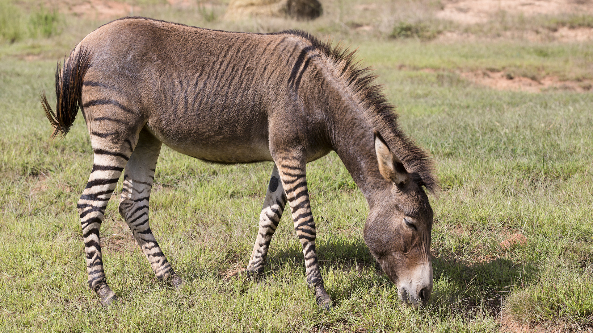

|
 |
| Alexander - Veterinarian Spirit Animal: Bunny Alexander joined us in 1995 as a caretaker for the rescued animals. Today, he is checking in with all of the animals daily, monitoring their progress, and applying all of the various treatments that the rescues require. |
Nat - Marine Biologist Spirit Animal: Elephant Nat has been handling all of the needs of aquatic rescues since 1993. You can find him swimming side by side with the fish, keeping their enviornment clean, and rescuing marine wildlife. |
|  |  |
| Angus - Wildland Firefighter Spirit Animal: Zonkey Angus is the leader of all grounds maintenance and protection. Having joined the sanctuary in 1997, he has since been preventing wildfires, maintaining the habitats of the animals, and overall ensuring that all recues will have a pleasant stay at the sanctuary. |
Aidan - Animal Trainer Spirit Animal: Uakari Aidan joined the team in 1994. He regularly checks in with the rescued animals to make sure that they are retaining their natural instincts, teaches them new tricks, and is ultimately the one who decides when they are ready to return to their homes. |